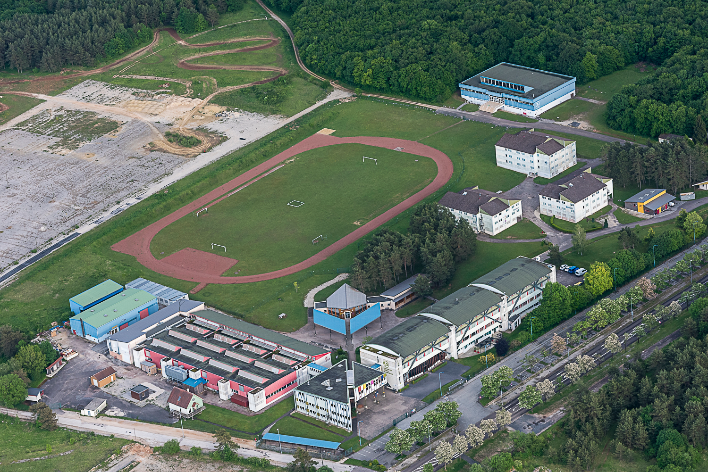

CHAU'MUN 2025
How can we deal with the consequences of rising sea levels and help societies adapt to this situation ?
19-21 march 2025

How can we deal with the consequences of rising sea levels and help societies adapt to this situation ?
19-21 march 2025
(This page uses content from lyceecdg52.com, feel free to visit it for more informations.)

Since the 2023 academic year, students have been able to join the international section, which offers them the opportunity for bilingual study. Teaching is conducted in English for subjects such as History/Geography and World Knowledge. Students can enroll directly in the tenth grade, while others must pass language tests to qualify for entry.

In collaboration with the Chaumont Football Club, a football section has been set up for students in general, technological, and vocational courses. Students are selected through physical tests and academic records. This section aims to raise the level of sports practice, train students in refereeing, and prepare them for regional competitions.
This technical option is available starting from the second year of high school and focuses on the theoretical and practical study of design and the arts. Students develop their curiosity, critical thinking, and foundational knowledge of design culture, while exploring experimental design practices. This option is recommended for students interested in the arts, creativity, and teamwork.

Since 2000, this option has offered students an additional three hours of weekly instruction beyond the common program. It combines the practice of various sports (such as athletics, swimming, and team sports) with reflection on these activities, addressing topics like health, dietetics, and sports psychology. The option is ideal for those considering further studies in sports or recreation.
This section allows students to develop their language skills while studying a science in English. It offers participants the chance to obtain honours on their highschool diploma. The section aims to promote international mobility and cultural openness, while also preparing students for an international career.
This option is chosen during registration, and offers students the opportunity to study scientific methods by encouraging them to tackle challenges and create innovative projects. The focus is on three main themes: mobility, eco-design and product engineering. Through this, students can enhance their creativity, capacity for innovation and develop their problem-solving skills.